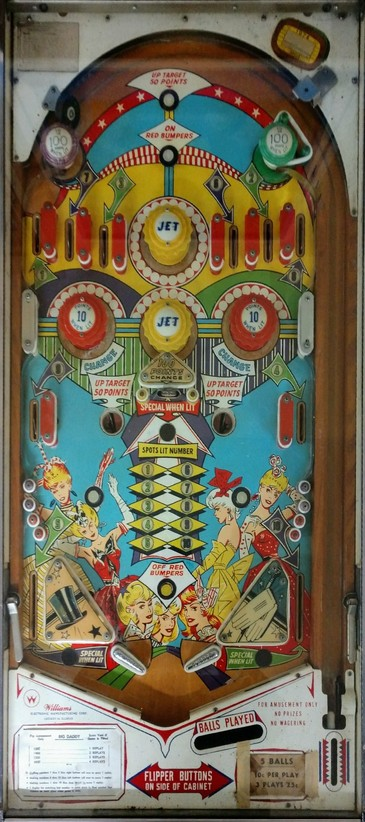

The main goal of Big Daddy is to collect the numbers 1-10 from around the playfield. The most straightforward way to do this is by making numbered rollover lanes. Rolling through a lit lane collects that number and unlights the lane. Rollover lanes score 50 points when lit, or 5 points when unlit. The 6 top lanes from left to right correspond to the numbers 1, 7, 3, 6, 2, and 8. The middle left and right side lanes correspond to 9 and 4, and the left and right out lanes correspond to 5 and 10. Collecting all of 1 through 5 lights the right out lane for Special and lights the top left passive bumper for 100 points. Collecting all of 6 through 10 lights the left out lane for Special and lights the top right passive bumper for 100 points. Completing both sets (1 through 10) lights the center drop target for a Special. Lit numbers and Specials are preserved from ball to ball for the entire game.
The center drop target scores 100 points and spots whichever number(s) in the 1-10 sequence are lit in the center of the playfield. Hitting either red pop bumper or the drop target itself rotates which number(s) are lit. Depending on game settings, the drop target may always have one number lit, always have two numbers lit, or alternate between the two. The drop target never resets on its own, even at the start of a new ball or new game; the only ways to raise the drop target if it is down are to press the rollover button at the very top of the game, or shoot one of the saucers on either side of the drop target. Raising the drop target in any fashion scores 50 points. If all of 1-10 are already collected, hitting the drop target scores a Special as well.
The yellow bumpers labelled Jet always score 1 points. Red bumpers score 1 point, or 10 when lit. Red bumpers are turned on by the rollover button just above the yellow Jet bumper, and turned off by the rollover button just between the flippers; these are the only ways to change the status of the bumpers, they do not automatically light or unlight at the start of any ball. The unlabeled rollover buttons just above the slingshots score 1 point.
There are no in lanes. Flippers back up directly to the slingshots, which score 1 point. There are no extra ball, center post, kickback, gate, or end of ball bonus features. Tilt ends game.
The below picture of Big Daddy's playfield was taken from Pinside, where it is listed as image #2665032. This copy of the game appears to have extra posts installed above the out lane entrances to make drains less common, which would not be present on a fully original machine.
